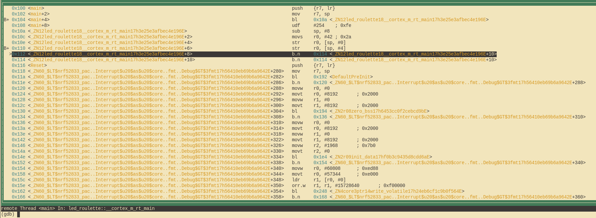

Làm quen phần mềm
Trong chương này chúng ta sẽ học cách build, run và debug một số chương trình rất đơn giản. Mục tiêu ở đây không phải là đi sâu vào chi tiết của Rust programming trên MB2 (chưa), mà chỉ để làm quen với cơ chế của quá trình đó.
Trước tiên, một lưu ý nhanh về các quy ước dùng trong phần còn lại của cuốn sách này. Chúng ta muốn bạn lấy một bản sao toàn bộ cuốn sách với
git clone http://github.com/rust-embedded/discovery-mb2
"Source code" của cuốn sách nằm trong discovery-mb2/mdbook/src. Bạn nên vào đó trong bản sao của mình và xem xét một chút. Mỗi thư mục chương có cả văn bản Markdown nguồn lẫn source code đầy đủ cho tất cả các chương trình trong chương đó. Khi chúng ta đề cập đến một đường dẫn như src/main.rs, chúng ta có nghĩa là vị trí đó bắt đầu từ chương bạn đang làm việc. Ví dụ, discovery-mb2 của bạn có một file có tên là mdbook/src/05-meet-your-software/examples/init.rs. Chúng ta sẽ gọi file đó chỉ là examples/init.rs trong chương này.
Có hai loại cơ bản của Rust code: chương trình thực thi "binary", và code "library". Code library sẽ không đóng vai trò lớn trong cuốn sách này. Source code của chương trình binary có thể nằm ở một trong nhiều nơi:
Một chương trình trong
src/main.rssẽ được tự động biên dịch và chạy bởicargo embedhoặccargo run. Không cần flags đặc biệt.Một chương trình trong
examples/foo.rscó thể được biên dịch và chạy bằngcargo embed --example foohoặccargo run --example foo.Một chương trình trong
src/bin/bar.rscó thể được biên dịch và chạy bằngcargo embed --bin barhoặccargo run --bin bar.
Điều này có vẻ phức tạp, nhưng đây là quy ước chuẩn của Cargo.
Bây giờ hãy tiến lên và làm việc với tất cả những điều này.
Embedded Setup
Hãy xem chương trình đầu tiên cần biên dịch. Kiểm tra file examples/init.rs:
#![deny(unsafe_code)]
#![no_main]
#![no_std]
use cortex_m::asm;
use cortex_m_rt::entry;
use microbit as _;
use panic_halt as _;
#[entry]
fn main() -> ! {
#[allow(clippy::needless_late_init)]
let _y;
let x = 42;
_y = x;
// vòng lặp vô hạn; chỉ để chúng ta không rời khỏi stack frame này
loop {
asm::nop();
}
}Các chương trình microcontroller khác với các chương trình chuẩn ở hai điểm: #![no_std] và #![no_main].
Thuộc tính no_std nói rằng chương trình này sẽ không dùng crate std, vốn giả định có một OS bên dưới; thay vào đó chương trình sẽ dùng crate core, một tập con của std có thể chạy trên các hệ thống bare metal (nghĩa là hệ thống không có các abstraction của OS như file và socket).
Thuộc tính no_main nói rằng chương trình này sẽ không dùng interface main tiêu chuẩn, vốn được thiết kế cho các ứng dụng command line nhận arguments. Thay vì main tiêu chuẩn, chúng ta sẽ dùng thuộc tính entry từ crate cortex-m-rt để định nghĩa một entry point tùy chỉnh. Trong chương trình này, chúng ta đã đặt tên entry point là main, nhưng có thể dùng bất kỳ tên nào khác. Hàm entry point phải có signature fn() -> !; kiểu này chỉ ra rằng hàm không thể return. Điều này có nghĩa là chương trình không bao giờ kết thúc bằng cách return từ main: nếu compiler phát hiện điều này có thể xảy ra, nó sẽ từ chối biên dịch chương trình của bạn.
Nếu bạn để ý kỹ, bạn cũng sẽ thấy có một thư mục .cargo có thể ẩn trong Cargo project. Thư mục này chứa file cấu hình Cargo .cargo/config.toml.
[build]
target = "thumbv7em-none-eabihf"
[target.thumbv7em-none-eabihf]
runner = "probe-rs run --chip nRF52833_xxAA"
rustflags = [
"-C", "linker=rust-lld",
]File này tinh chỉnh quá trình linking để điều chỉnh bố cục bộ nhớ của chương trình theo yêu cầu của thiết bị đích. Quá trình linking được sửa đổi này là yêu cầu của crate cortex-m-rt. File .cargo/config.toml cũng báo cho Cargo cách build và run code trên MB2 của chúng ta.
Ngoài ra còn có file Embed.toml ở đây:
[default.general]
chip = "nrf52833_xxAA"
[default.reset]
halt_afterwards = true
[default.rtt]
enabled = false
[default.gdb]
enabled = trueFile này báo cho cargo-embed biết rằng:
- Chúng ta đang làm việc với NRF52833.
- Chúng ta muốn dừng (halt) chip sau khi flash để chương trình dừng trước
main. - Chúng ta muốn tắt RTT. RTT là giao thức cho phép chip gửi text tới debugger. Bạn đã thấy RTT hoạt động: đó là giao thức đã gửi "Hello World" ở chương 3.
- Chúng ta muốn bật GDB. Điều này sẽ cần thiết cho quy trình debug.
Bây giờ chúng ta đã hiểu mọi thứ, hãy bắt đầu bằng cách build chương trình này.
Build it
Bước đầu tiên là build "binary" crate của chúng ta. Vì microcontroller có kiến trúc khác với máy tính của bạn, chúng ta sẽ phải cross compile. Cross compiling trong Rust đơn giản như việc truyền thêm flag --target vào rustc hoặc Cargo. Phần phức tạp là tìm ra argument của flag đó: tên của target.
Như chúng ta đã biết, microcontroller trên micro:bit v2 có processor Cortex-M4F. rustc biết cách cross-compile sang kiến trúc Cortex-M và cung cấp nhiều target khác nhau bao gồm các họ processor khác nhau trong kiến trúc đó:
thumbv6m-none-eabi, cho các processor Cortex-M0 và Cortex-M1thumbv7m-none-eabi, cho processor Cortex-M3thumbv7em-none-eabi, cho các processor Cortex-M4 và Cortex-M7thumbv7em-none-eabihf, cho các processor Cortex-M4F và Cortex-M7Fthumbv8m.main-none-eabi, cho các processor Cortex-M33 và Cortex-M35Pthumbv8m.main-none-eabihf, cho các processor Cortex-M33F và Cortex-M35PF
"Thumb" ở đây đề cập đến một phiên bản của instruction set Arm có các instruction nhỏ hơn để giảm kích thước code (đó là một cách chơi chữ). Phần hf/F có tăng tốc phần cứng floating point. Điều này sẽ làm cho các tính toán số học liên quan đến phân số (floating decimal point) nhanh hơn nhiều.
Đối với micro:bit v2, chúng ta sẽ muốn target thumbv7em-none-eabihf.
Trước khi cross-compile, bạn phải tải xuống phiên bản pre-compiled của thư viện chuẩn (thực ra là phiên bản rút gọn của nó) cho target của bạn. Điều đó được thực hiện bằng rustup:
$ rustup target add thumbv7em-none-eabihfBạn chỉ cần thực hiện bước trên một lần; rustup sau đó sẽ cập nhật target này (cài lại component rust-std mới chứa thư viện core mà chúng ta dùng) bất cứ khi nào bạn cập nhật toolchain. Do đó bạn có thể bỏ qua bước này nếu bạn đã thêm target cần thiết khi xác minh thiết lập.
Với component rust-std đã có, bây giờ bạn có thể cross compile chương trình bằng Cargo. Hãy đảm bảo bạn đang ở trong thư mục mdbook/src/05-meet-your-software trong Git repo, sau đó build. Code khởi đầu này là một example, vì vậy chúng ta biên dịch nó như vậy.
$ cargo build --example init
Compiling semver-parser v0.7.0
Compiling proc-macro2 v1.0.86
...
Finished dev [unoptimized + debuginfo] target(s) in 33.67sLƯU Ý: Hãy chắc chắn biên dịch crate này không có tối ưu hóa. File
Cargo.tomlđược cung cấp và lệnh build ở trên sẽ đảm bảo tối ưu hóa được tắt miễn là bạn không truyền flag--releasecho cargo.
Được rồi, bây giờ chúng ta đã tạo ra một executable. Executable này sẽ không nhấp nháy bất kỳ LED nào: đây chỉ là một phiên bản đơn giản hóa mà chúng ta sẽ xây dựng dựa trên đó sau trong chương. Để kiểm tra, hãy xác minh rằng executable được tạo ra thực sự là một Arm binary. (Lệnh dưới đây tương đương với
readelf -h ../../../target/thumbv7em-none-eabihf/debug/examples/inittrên các hệ thống có readelf.)
$ cargo readobj --example init -- --file-headers
Finished dev [unoptimized + debuginfo] target(s) in 0.01s
ELF Header:
Magic: 7f 45 4c 46 01 01 01 00 00 00 00 00 00 00 00 00
Class: ELF32
Data: 2's complement, little endian
Version: 1 (current)
OS/ABI: UNIX - System V
ABI Version: 0
Type: EXEC (Executable file)
Machine: Arm
Version: 0x1
Entry point address: 0x117
Start of program headers: 52 (bytes into file)
Start of section headers: 793112 (bytes into file)
Flags: 0x5000400
Size of this header: 52 (bytes)
Size of program headers: 32 (bytes)
Number of program headers: 4
Size of section headers: 40 (bytes)
Number of section headers: 21
Section header string table index: 19Nếu các con số của bạn không khớp chính xác với những con số này, đừng lo lắng: rất nhiều trong số này khá phụ thuộc vào môi trường build hiện tại.
Tiếp theo, chúng ta sẽ flash chương trình vào microcontroller của mình.
Flash it
Flashing là quá trình đưa chương trình của chúng ta vào bộ nhớ persistent của microcontroller. Sau khi flash, microcontroller sẽ thực thi chương trình đã được flash mỗi khi bật nguồn.
Chương trình của chúng ta sẽ là chương trình duy nhất trong bộ nhớ microcontroller. Ý tôi là không có gì khác chạy trên microcontroller: không có OS, không có "daemon", không có gì cả. Chương trình của chúng ta có toàn quyền kiểm soát thiết bị.
Flashing binary thực sự khá đơn giản, nhờ cargo embed.
Trước khi thực thi lệnh đó, hãy xem xét những gì nó thực sự làm. Nếu bạn nhìn vào cạnh của micro:bit với đầu nối USB quay lên trên, bạn sẽ thấy thực ra có ba hình vuông đen ở đó. Cái lớn nhất là speaker. Cái khác là MCU của chúng ta mà chúng ta đã nói đến... nhưng cái còn lại có mục đích gì? Chip này là một MCU khác, một NRF52820 gần mạnh bằng NRF52833 mà chúng ta sẽ lập trình! Chip này có ba mục đích chính:
- Cho phép kiểm soát nguồn điện và reset của MCU NRF52833 từ đầu nối USB.
- Cung cấp cầu nối serial to USB cho MCU của chúng ta.
- Cung cấp interface để lập trình và debug NRF52833 của chúng ta (đây là mục đích liên quan đến hiện tại).
Chip này hoạt động như một cầu nối giữa máy tính của chúng ta (được kết nối với nó qua USB) và MCU (được kết nối với nó qua các dây dẫn và giao tiếp bằng giao thức SWD). Cầu nối này cho phép chúng ta flash binary mới vào MCU, kiểm tra trạng thái chương trình qua debugger và thực hiện các thứ hữu ích khác.
Vậy hãy flash nó!
$ cargo embed --example init
(...)
Erasing sectors ✔ [00:00:00] [####################################################################################################################################################] 2.00KiB/ 2.00KiB @ 4.21KiB/s (eta 0s )
Programming pages ✔ [00:00:00] [####################################################################################################################################################] 2.00KiB/ 2.00KiB @ 2.71KiB/s (eta 0s )
Finished flashing in 0.608sBạn sẽ thấy cargo-embed không thoát sau khi in dòng cuối cùng. Điều này là có chủ ý: bạn không nên đóng cargo-embed, vì chúng ta cần nó ở trạng thái này cho bước tiếp theo — debug nó! Hơn nữa, bạn sẽ nhận thấy rằng cargo build và cargo embed thực sự được truyền các flags giống nhau. Đó là vì cargo embed thực sự thực thi build và sau đó flash binary kết quả lên chip. Điều này có nghĩa là bạn có thể bỏ qua bước cargo build trong tương lai nếu bạn muốn flash code ngay lập tức.
Debug it
Hãy tìm hiểu cách debug chương trình nhỏ của chúng ta. Thực ra nó chưa có bất kỳ lỗi thú vị nào, nhưng đó là loại chương trình tốt nhất để học debug.
Thứ này hoạt động như thế nào?
Trước khi debug chương trình, hãy dành một chút thời gian để nhanh chóng hiểu những gì thực sự đang xảy ra. Trong chương trước, chúng ta đã thảo luận về mục đích của chip thứ hai trên board, cũng như cách nó giao tiếp với máy tính của chúng ta, nhưng làm thế nào chúng ta thực sự có thể sử dụng nó?
Tùy chọn nhỏ default.gdb.enabled = true trong Embed.toml khiến cargo embed mở một "GDB stub" sau khi flash. Đây là một server để GDB của chúng ta kết nối tới và gửi các lệnh như "đặt breakpoint tại địa chỉ X". Server sau đó có thể quyết định theo cách riêng của nó cách xử lý lệnh này. Trong trường hợp của GDB stub của cargo embed, nó sẽ chuyển lệnh qua USB đến "debugging probe" trên chip thứ hai. Chip này làm việc giao tiếp với MCU cho chúng ta.
Let's debug!
cargo-embed đang chạy trong shell hiện tại của chúng ta. Chúng ta có thể mở một shell mới và quay lại thư mục project. Khi đã ở đó, trước tiên chúng ta phải mở binary trong gdb như thế này:
$ gdb ../../../target/thumbv7em-none-eabihf/debug/examples/initLƯU Ý: Tùy thuộc vào GDB bạn cài, bạn sẽ phải dùng lệnh khác để khởi chạy. Xem lại chương 3 nếu bạn quên lệnh đó là gì.
../../.. trong lệnh này là cần thiết, vì mỗi example project nằm trong một "workspace" chứa toàn bộ cuốn sách. Workspace có một thư mục target dùng chung. Xem thêm Workspaces chapter trong Rust Book.
LƯU Ý: Nếu
cargo-embedin ra nhiều warnings ở đây đừng lo lắng. Hiện tại nó chưa triển khai đầy đủ giao thức GDB, và vì vậy có thể không nhận ra tất cả các lệnh mà GDB của bạn đang gửi. Miễn là GDB không crash, bạn ổn.
Tiếp theo chúng ta sẽ phải kết nối với GDB stub. Nó chạy trên localhost:1337 theo mặc định, vì vậy để kết nối với nó hãy chạy lệnh sau:
(gdb) target remote :1337
Remote debugging using :1337
0x00000116 in nrf52833_pac::{{impl}}::fmt (self=0xd472e165, f=0x3c195ff7) at /home/nix/.cargo/registry/src/github.com-1ecc6299db9ec823/nrf52833-pac-0.9.0/src/lib.rs:157
157 #[derive(Copy, Clone, Debug)]LƯU Ý: Ví dụ trong repository cho chương này có thể thay đổi theo thời gian. Số dòng và các chi tiết source khác vì vậy có thể khác với những gì được hiển thị ở đây và bên dưới.
Nếu chương trình không dừng (halt) sau khi khởi động và bạn đặt chân vào một chỗ sâu hơn trong chương trình như sau, hãy thử chạy
monitor reset haltđể reset. Điều này là do một bug trongprobe-rs, xem issue #27 để biết thêm chi tiết.(gdb) target remote :1337 Remote debugging using :1337 init::__cortex_m_rt_main () at mdbook/src/05-meet-your-software/examples/init.rs:19 19 asm::nop(); (gdb) monitor reset halt Resetting and halting target Target halted
Tiếp theo, chúng ta muốn đến hàm main của chương trình. Chúng ta sẽ làm điều này bằng cách đặt breakpoint ở đó trước rồi tiếp tục thực thi chương trình cho đến khi chạm breakpoint:
(gdb) break main
Breakpoint 1 at 0x104: file src/05-meet-your-software/examples/init.rs, line 9.
Note: automatically using hardware breakpoints for read-only addresses.
(gdb) continue
Continuing.
Breakpoint 1, init::__cortex_m_rt_main_trampoline () at src/05-meet-your-software/examples/init.rs:9
9 #[entry]Breakpoints có thể được dùng để dừng luồng thực thi bình thường của chương trình. Lệnh continue sẽ để chương trình chạy tự do cho đến khi nó chạm đến breakpoint. Trong trường hợp này, cho đến khi nó chạm đến hàm main vì có breakpoint ở đó.
Lưu ý GDB output nói "Breakpoint 1". Hãy nhớ rằng processor của chúng ta chỉ có thể dùng một số lượng hạn chế các breakpoint này, vì vậy nên chú ý đến các thông báo này. Nếu hết breakpoint, bạn có thể liệt kê tất cả các breakpoint hiện tại bằng info break và xóa breakpoint mong muốn bằng delete <breakpoint-num>.
Để có trải nghiệm debug tốt hơn, chúng ta sẽ dùng Text User Interface (TUI) của GDB. Để vào chế độ đó, trên shell GDB nhập lệnh sau:
(gdb) layout srcLƯU Ý: Xin lỗi người dùng Windows. GDB đi kèm với GNU Arm Embedded Toolchain không hỗ trợ chế độ TUI này
:-(.

Lệnh break của GDB không chỉ hoạt động với tên hàm: nó cũng có thể ngắt tại các số dòng nhất định. Nếu chúng ta muốn ngắt ở dòng 13, chúng ta có thể đơn giản làm:
(gdb) break 13
Breakpoint 2 at 0x110: file src/05-meet-your-software/examples/init.rs, line 13.
(gdb) continue
Continuing.
Breakpoint 2, init::__cortex_m_rt_main () at src/05-meet-your-software/examples/init.rs:13
(gdb)Bất cứ lúc nào bạn có thể thoát khỏi chế độ TUI bằng lệnh sau:
(gdb) tui disableBây giờ chúng ta đang "ở" câu lệnh _y = x; câu lệnh đó chưa được thực thi. Điều này có nghĩa là x đã được khởi tạo nhưng _y có thể chứa bất cứ thứ gì. Hãy kiểm tra x bằng lệnh print:
(gdb) print x
$1 = 42
(gdb) print &x
$2 = (*mut i32) 0x20003fe8
(gdb)Như mong đợi, x chứa giá trị 42. Lệnh print &x in địa chỉ của biến x. Điểm thú vị ở đây là GDB output hiển thị kiểu của reference: *mut i32, một pointer đến giá trị i32 có thể thay đổi.
Nếu chúng ta muốn tiếp tục thực thi chương trình từng dòng một, chúng ta có thể làm điều đó bằng lệnh next. Hãy tiến đến câu lệnh loop {}:
(gdb) next
16 loop {}Và _y bây giờ nên được khởi tạo.
(gdb) print _y
$5 = 42Thay vì in các biến cục bộ từng cái một, bạn cũng có thể dùng lệnh info locals:
(gdb) info locals
x = 42
_y = 42
(gdb)Nếu chúng ta dùng next một lần nữa ở trên câu lệnh loop {}, chúng ta sẽ bị kẹt vì chương trình sẽ không bao giờ vượt qua câu lệnh đó. Thay vào đó, chúng ta sẽ chuyển sang chế độ xem disassemble bằng lệnh layout asm và tiến từng instruction một bằng stepi. Bạn luôn có thể chuyển lại chế độ xem Rust source code sau bằng cách dùng lại lệnh layout src.
LƯU Ý: Nếu bạn dùng lệnh
nexthoặccontinuenhầm và GDB bị kẹt, bạn có thể thoát khỏi bằng cách nhấnCtrl+C.
(gdb) layout asm
Nếu bạn không ở trong chế độ TUI, bạn có thể dùng lệnh disassemble /m để disassemble chương trình xung quanh dòng bạn đang ở hiện tại.
(gdb) disassemble /m
Dump of assembler code for function _ZN12init18__cortex_m_rt_main17h3e25e3afbec4e196E:
10 fn main() -> ! {
0x0000010a <+0>: sub sp, #8
0x0000010c <+2>: movs r0, #42 ; 0x2a
11 let _y;
12 let x = 42;
0x0000010e <+4>: str r0, [sp, #0]
13 _y = x;
0x00000110 <+6>: str r0, [sp, #4]
14
15 // infinite loop; just so we don't leave this stack frame
16 loop {}
=> 0x00000112 <+8>: b.n 0x114 <_ZN12init18__cortex_m_rt_main17h3e25e3afbec4e196E+10>
0x00000114 <+10>: b.n 0x114 <_ZN12init18__cortex_m_rt_main17h3e25e3afbec4e196E+10>
End of assembler dump.Thấy mũi tên béo => ở bên trái không? Nó cho thấy instruction mà processor sẽ thực thi tiếp theo.
Nếu không ở trong chế độ TUI, trên mỗi lệnh stepi, GDB sẽ in câu lệnh và số dòng của instruction mà processor sẽ thực thi tiếp theo.
(gdb) stepi
16 loop {}
(gdb) stepi
16 loop {}Một mẹo cuối trước khi chúng ta chuyển sang thứ thú vị hơn. Nhập các lệnh sau vào GDB:
(gdb) monitor reset
(gdb) c
Continuing.
Breakpoint 1, init::__cortex_m_rt_main_trampoline () at src/05-meet-your-software/src/main.rs:9
9 #[entry]
(gdb)Bây giờ chúng ta đã quay lại đầu main!
monitor reset sẽ reset microcontroller và dừng nó ngay tại entry point của chương trình. Lệnh continue tiếp theo sẽ để chương trình chạy tự do cho đến khi nó chạm đến hàm main có breakpoint trên đó.
Combo này tiện dụng khi bạn, do nhầm lẫn, bỏ qua một phần của chương trình mà bạn muốn kiểm tra. Bạn có thể dễ dàng khôi phục trạng thái chương trình về đầu.
Lưu ý kỹ: Lệnh
resetnày không xóa hay chạm đến RAM. Bộ nhớ đó sẽ giữ các giá trị từ lần chạy trước. Tuy nhiên điều đó sẽ không thành vấn đề, trừ khi hành vi chương trình của bạn phụ thuộc vào giá trị của các biến chưa được khởi tạo — nhưng đó chính là định nghĩa của Undefined Behavior (UB).
Chúng ta đã xong với phiên debug này. Bạn có thể kết thúc nó bằng lệnh quit.
(gdb) quit
A debugging session is active.
Inferior 1 [Remote target] will be detached.
Quit anyway? (y or n) y
Detaching from program: $PWD/target/thumbv7em-none-eabihf/debug/meet-your-software, Remote target
Ending remote debugging.
[Inferior 1 (Remote target) detached]LƯU Ý: Nếu GDB CLI mặc định không phù hợp với ý thích của bạn, hãy xem gdb-dashboard. Nó dùng Python để biến GDB CLI mặc định thành một dashboard hiển thị các register, chế độ xem source, chế độ xem assembly và các thứ khác.
Nếu bạn muốn tìm hiểu thêm về những gì GDB có thể làm, hãy xem phần Cách dùng GDB.
Tiếp theo là gì? API bậc cao mà tôi đã hứa.
Light it up
Chúng ta sẽ kết thúc chương này bằng cách làm một trong nhiều LED trên MB2 sáng lên. Để hoàn thành nhiệm vụ này, chúng ta sẽ dùng một trong các trait được cung cấp bởi embedded-hal, cụ thể là trait OutputPin cho phép chúng ta bật hoặc tắt một pin.
LED của micro:bit
Ở mặt sau của micro:bit, bạn có thể thấy một hình vuông 5x5 của các LED, thường gọi là LED matrix. Thiết kế matrix này được sử dụng để thay vì phải dùng 25 chân riêng biệt để điều khiển từng LED một, chúng ta chỉ cần dùng 10 (5+5) chân để kiểm soát cột và hàng nào của ma trận sáng lên.
Hiện tại chúng ta sẽ dùng crate microbit-v2 để thao tác các LED. Trong chương tiếp theo chúng ta sẽ đi qua chi tiết tất cả các tùy chọn có sẵn.
Thực sự bật sáng!
Code cần thiết để bật LED trong ma trận thực ra khá đơn giản nhưng cần một chút thiết lập. Trước tiên hãy xem src/main.rs; sau đó chúng ta có thể đi qua từng bước.
#![deny(unsafe_code)]
#![no_main]
#![no_std]
use cortex_m_rt::entry;
use embedded_hal::digital::OutputPin;
use microbit::board::Board;
use panic_halt as _;
#[entry]
fn main() -> ! {
let mut board = Board::take().unwrap();
board.display_pins.col1.set_low().unwrap();
board.display_pins.row1.set_high().unwrap();
loop {
core::hint::spin_loop();
}
}Vài dòng đầu cho đến hàm main chỉ thực hiện một số import và setup cơ bản mà chúng ta đã xem xét hầu hết. Tuy nhiên, hàm main trông khá khác so với những gì chúng ta đã thấy cho đến nay.
Dòng đầu tiên liên quan đến cách hầu hết các HAL được viết bằng Rust hoạt động bên trong. Như đã thảo luận trước đây, chúng được xây dựng trên các PAC crate sở hữu (theo nghĩa Rust) tất cả các peripheral của chip. Khi chúng ta nói
let mut board = Board::take().unwrap();Chúng ta lấy tất cả các peripheral này từ PAC và bind chúng vào một biến. Trong trường hợp cụ thể này, chúng ta không chỉ làm việc với HAL mà với toàn bộ BSP, vì vậy điều này cũng lấy quyền sở hữu Rust representation của các chip khác trên board.
LƯU Ý: Nếu bạn thắc mắc tại sao chúng ta phải gọi
unwrap()ở đây, về lý thuyếttake()có thể được gọi nhiều hơn một lần. Điều này sẽ dẫn đến việc các peripheral được đại diện bởi hai biến riêng biệt và do đó có nhiều hành vi khó hiểu vì hai biến thay đổi cùng một resource. Để tránh điều này, PAC được triển khai theo cách sẽ panic nếu bạn cố lấy peripheral hai lần.
(Một lần nữa, nếu bạn bị nhầm lẫn bởi tất cả những điều này, chương tiếp theo sẽ đi qua tất cả một lần nữa với nhiều chi tiết hơn.)
Bây giờ chúng ta có thể bật LED được kết nối với row1, col1 bằng cách đặt pin row1 ở mức cao (tức là bật nó lên). Lý do chúng ta có thể để col1 ở mức thấp là do cách mạch LED matrix hoạt động. Hơn nữa, embedded-hal được thiết kế theo cách mà mọi thao tác trên phần cứng đều có thể return lỗi, kể cả chỉ toggle pin on hoặc off. Vì điều đó khó có thể xảy ra trong trường hợp của chúng ta, chúng ta có thể unwrap() kết quả.
Kiểm tra
Kiểm tra chương trình nhỏ của chúng ta khá đơn giản. Chúng ta chạy cargo embed và để nó flash như trước. Sau đó mở GDB và kết nối với GDB stub.
$ gdb ../../../target/thumbv7em-none-eabihf/debug/meet-your-software
(gdb) target remote :1337
Remote debugging using :1337
cortex_m_rt::Reset () at /home/nix/.cargo/registry/src/github.com-1ecc6299db9ec823/cortex-m-rt-0.6.12/src/lib.rs:489
489 pub unsafe extern "C" fn Reset() -> ! {
(gdb)Bây giờ chúng ta để chương trình chạy qua lệnh continue của GDB: một trong các LED ở mặt trước của micro:bit sẽ sáng lên.